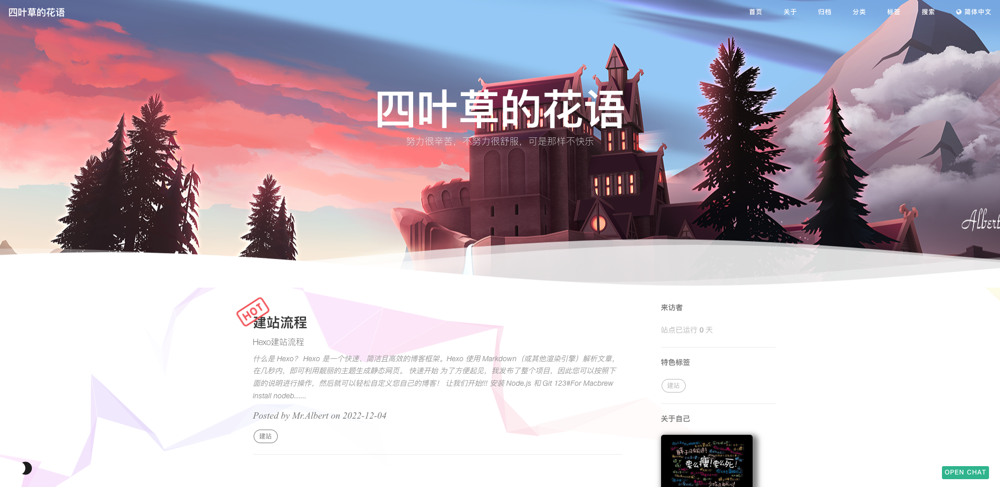
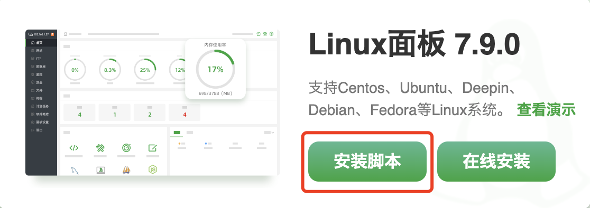
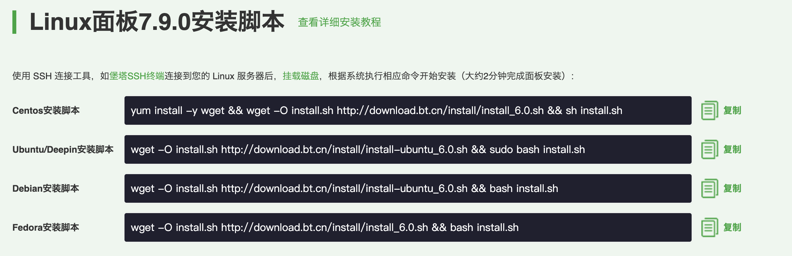
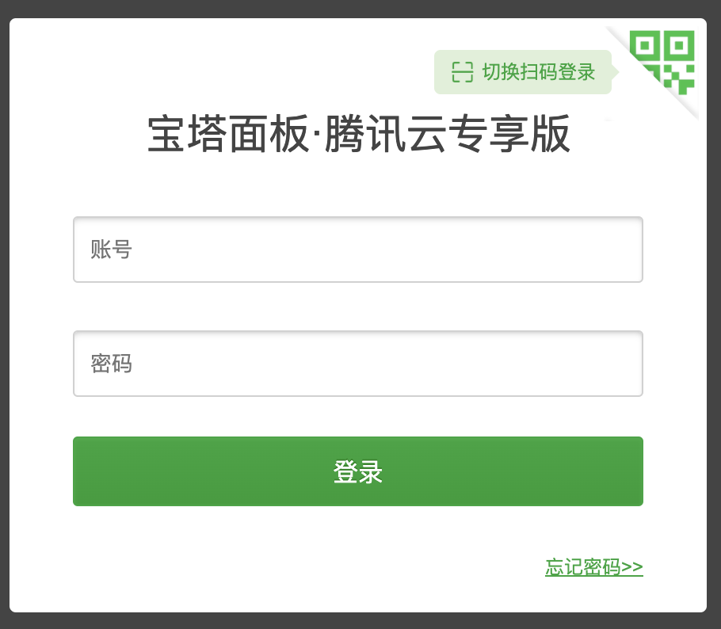
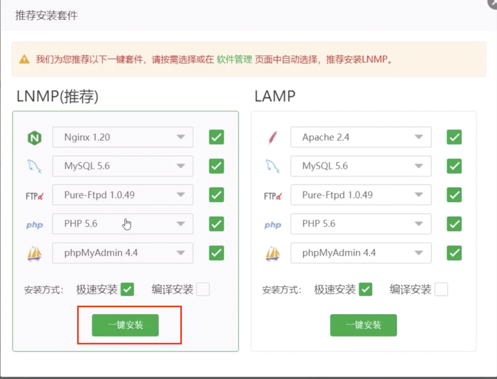
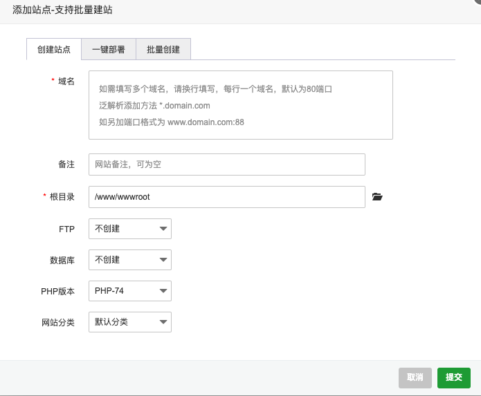
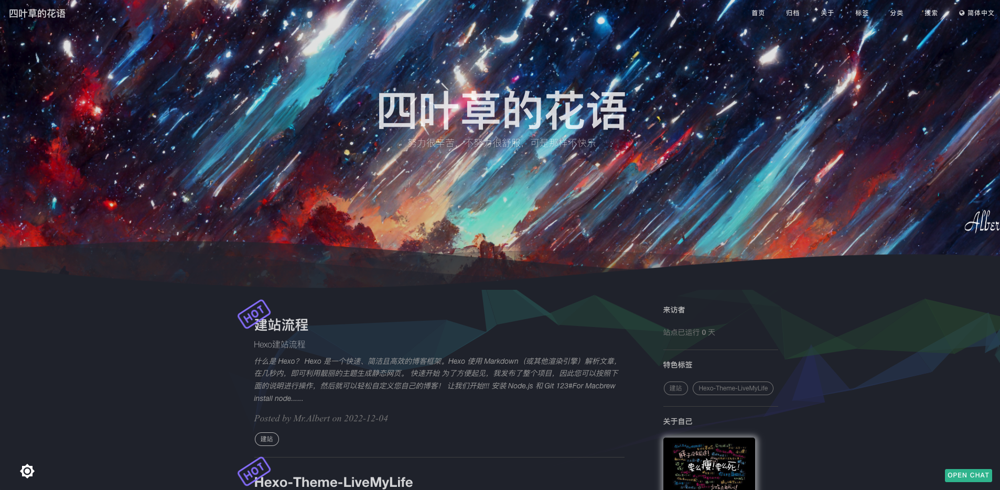

什么是 Hexo？
Hexo 是一个快速、简洁且高效的博客框架。Hexo 使用 Markdown（或其他渲染引擎）解析文章，在几秒内，即可利用靓丽的主题生成静态网页。

快速开始
为了方便起见，我发布了整个项目，因此您可以按照下面的说明进行操作，然后就可以轻松自定义您自己的博客！
让我们开始!!!
安装 Node.js 和 Git
1 | #For Mac |
Windows：下载 & 安装 Node.js。-> Node.js
Windows：下载 & 安装 Git。-> Git
安装 Hexo
1 | $ npm install -g hexo-cli |
什么是 Hexo?
Hexo 是一个快速、简洁且高效的博客框架。Hexo 使用 Markdown（或其他渲染引擎）解析文章，在几秒内，即可利用靓丽的主题生成静态网页。
设置你的博客
1 | $ hexo init blog |
更多的命令 -> Hexo Commands
主题使用
初始化
1 | cd blog |
设置主题
修改 theme 属性值，在 _config.yml 配置文件中。
1 | # Extensions |
启动服务
1 | hexo generate # or hexo g |
启动本地服务器。 默认访问地址 http://localhost:4000/。
部署上云
1.前提
- 已经搭建好 hexo 的相关环境，并将 hexo 部署到了 GitHub 上
- 已经购买好云服务器
- 已经购买并备案好域名 （可选项，没有也可以用 公网ip 地址访问 hexo)
2.安装宝塔面板

根据自己服务器的类型，复制对应的代码

进入腾讯云的控制台，选择自己的云服务器，点击登录，进入终端。
粘贴刚才复制的代码，回车，一路确认。
在浏览器中访问外网面板地址，使用宝塔提供的用户名和密码登录。

进入面板后，点击一键安装 LNMP。就能直接将 Nginx，MySQL 等网站所需内容一键安装好。

3.安装 并配置 Git 仓库
1 | yum install -y nginx git |
添加一个用户git
1 | adduser git #添加git用户 |
给git用户添加ssh密钥
1 | 在主机端打开powershell，cd到C:\Users\admin\.ssh生成密匙，如已有密匙可跳过这一步 |
在www/wwwroot/目录下git clone项目
创建php站点

将根目录指向git clone下来的项目
然后通过公网ip或者域名就可以访问了，效果如图：

如果您喜欢此博客或发现它对您有用，则欢迎对此发表评论。 也欢迎您共享此博客，以便更多人可以参与。 如果博客中使用的图像侵犯了您的版权，请与作者联系以将其删除。 谢谢 ！